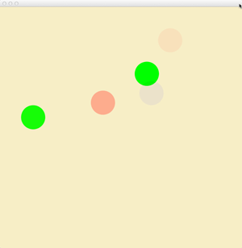

Touch Emulation
The Leap Motion API provides information that you can use to implement
touch emulation in your application. Touch information is provided by
the LeapPointable class.
Overview
The Leap Motion API defines an adaptive touch surface that you can use to
orchestrate interaction with 2D elements of your application. This
surface is oriented roughly parallel to the x-y plane, but adapts to the
user’s finger and hand position. As the user reaches forward with a
finger or tool, the Leap reports whether that pointable object is
close-to or touching this imaginary surface. The API reports touches
with respect to the surface with two values: the zone and the distance
to the touch plane.

The touch zone identifies whether the Leap Motion software considers a
LeapPointable as hovering near the touch surface, as penetrating the touch
surface, or as too far from the surface (or pointing in the wrong
direction). The zones are “hovering,” “touching,” and “none.” The
transition between zones tends to lag behind the touch distance. This
lag is used to prevent abrupt and repeated transitions. If you are
implementing touch interaction within an application, you may not need
to consider the touch zone very often.
The touch distance is valid only when a Pointable is within the hovering
or touching zones. The distance is a normalized value in the range
[+1..-1]. When a LeapPointable first enters the hovering zone, the touch
distance is +1.0 and the distance decreases toward 0 as the LeapPointable
nears the touch surface. When the LeapPointable penetrates the surface, the
distance is 0. As the LeapPointable pushes deeper into the touch zone, the
distance approaches, but never exceeds, -1.
You can use the zone value to decide when to update UI elements based on
hover or touch. You can use the distance to further modify UI elements
based on proximity to the touch plane. For example, you can show the
highlight state of a control when a finger is over the control and in
the hovering zone and change the cursor based on distance to provide
feedback about how close the user is to touching the control.
As part of the touch emulation API the Leap Motion provides a stabilized
position for LeapPointable objects in addition to the standard position. The
Leap Motion software stabilizes the position using an adaptive filter
that smooths and slows the motion to make it easier for the user to
interact with small regions on the screen (like buttons and links). The
smoothing is greater when the movement is slow so that the user can zero
in and touch a particular point more easily.
Getting the Touch Zone
The touch zone is reported by the touchZone attribute of the LeapPointable
class. The zones are identified using the LeapPointableZone enumeration, which
defines the following states:
- LEAP_POINTABLE_ZONE_NONE — the pointable is either too far from the touch surface to be
considered touching, or it is pointing back toward the user. - LEAP_POINTABLE_ZONE_HOVERING — the pointable tip has crossed into the hovering zone, but
isn’t considered touching. - LEAP_POINTABLE_ZONE_TOUCHING — the pointable has crossed the virtual touch surface.
The following code snippet illustrates how to retrieve the zone of the
forward-most finger:
LeapFrame *frame = [leap frame:0];
LeapPointable *pointable = [[frame pointables] frontmost];
LeapPointableZone *zone = [pointable touchZone];
Getting the Touch Distance
The touch distance is reported by the touchDistance attribute of the
LeapPointable class. The distance ranges from +1 to -1 as the finger moves
to and though the virtual touch surface. The distance does not represent
a physical quantity, but rather how close to touching the Leap Software
considers the pointable.
The following code snippet illustrates how to retrieve the touch
distance of the forward-most finger:
LeapFrame *frame = [leap frame:0];
LeapPointable *pointable = [[frame pointables] frontmost];
float distance = [pointable touchDistance];
Getting the Stabilized Position of a Pointable
The stabilized position is reported by the stabilizedTipPosition
attribute of the LeapPointable class. This position is reported in reference
to the standard Leap Motion coordinate system, but has a
context-sensitive amount of filtering and stabilization.
The following code snippet illustrates how to retrieve the stabilized
position of the forward-most finger:
LeapFrame *frame = [leap frame:0];
LeapPointable *pointable = [[frame pointables] frontmost];
LeapVector *stabilizedPosition = [pointable stabilizedTipPosition];
Converting from Leap Motion Coordinates to Application Coordinates
When implementing touch emulation, you must map the Leap Motion
coordinate space to the screen space of your application. To make this
mapping easier, the Leap Motion API provides the LeapInteractionBox class.
The LeapInteractionBox represents a rectilinear volume within the Leap
Motion field of view. The class provides a function that normalizes
positions within this volume to coordinates in the range [0..1]. You can
normalize a position and then scale the resulting coordinate by the
application dimensions to get a point in application coordinates.
For example, if you have a window with a client-area size represented by
the variables windowWidth and windowHeight, you can get the 2D pixel
coordinates of a touch point within this window using the following
code:
LeapFrame *frame = [leap frame:0];
LeapPointable *pointable = [[frame pointables] frontmost];
LeapVector *stabilizedPosition = [pointable stabilizedTipPosition];
LeapInteractionBox *iBox = [frame interactionBox];
LeapVector *normalizedPosition = [iBox normalizePoint:stabilizedPosition clamp:YES];
float x = [normalizedPosition x] * windowWidth;
float y = windowHeight - [normalizedPosition y] * windowHeight;
TouchPoints Example
The following example uses the touch emulation APIs to display the
positions of all detected Pointable objects in an NSView.
The example uses the touch zone to set the color of the points and uses
the touch distance to set the alpha value. The stabilized tip positions
are mapped to the NSView bounds using the LeapInteractionBox class.

#import "LeapObjectiveC.h"
@interface LMETouchPointView : NSViewLeapListener
@property (nonatomic, strong) LeapController *leap;
@end
@implementation LMETouchPointView
@synthesize leap = _leap;
- (id)initWithFrame:(NSRect)frame
{
self = [super initWithFrame:frame];
if (self) {
self.leap = [[LeapController alloc] initWithListener:self];
[NSColor setIgnoresAlpha:NO];
}
return self;
}
- (void)drawRect:(NSRect)dirtyRect
{
[[NSColor colorWithDeviceRed:.97 green:.93 blue:.79 alpha:1.0] set];
NSRectFillUsingOperation(self.bounds, NSCompositeCopy);
LeapFrame *frame = [self.leap frame:0];
LeapInteractionBox *iBox = frame.interactionBox;
for (LeapFinger *finger in frame.fingers)
{
LeapVector *normalizedPosition = [iBox normalizePoint:finger.stabilizedTipPosition clamp:YES];
NSRect cursorBounds = NSMakeRect(normalizedPosition.x * self.bounds.size.width - 20,
normalizedPosition.y * self.bounds.size.height - 20,
40, 40);
NSBezierPath *cursor = [NSBezierPath bezierPathWithOvalInRect:cursorBounds];
if (finger.touchZone == LEAP_POINTABLE_ZONE_HOVERING)
{
[[NSColor colorWithDeviceRed:0 green:1 blue:0 alpha:1.25 - finger.touchDistance] set];
}
else if (finger.touchZone == LEAP_POINTABLE_ZONE_TOUCHING)
{
[[NSColor colorWithDeviceRed:1 green:0 blue:0 alpha: -finger.touchDistance] set];
}
else
{
[[NSColor colorWithDeviceRed:0 green:0 blue:1 alpha:0.25] set];
}
[cursor fill];
}
}
-(void)onFrame:(NSNotification *)notification
{
NSLog(@"OnFrame");
[self setNeedsDisplay:YES];
}
-(void)onConnect:(NSNotification *)notification
{
NSLog(@"OnConnect");
}
-(void)onInit:(NSNotification *)notification
{
NSLog(@"OnInit");
}
-(void)onDisconnect:(NSNotification *)notification
{
NSLog(@"OnDisconnect");
}
-(void)onExit:(NSNotification *)notification
{
NSLog(@"OnExit");
}
@end